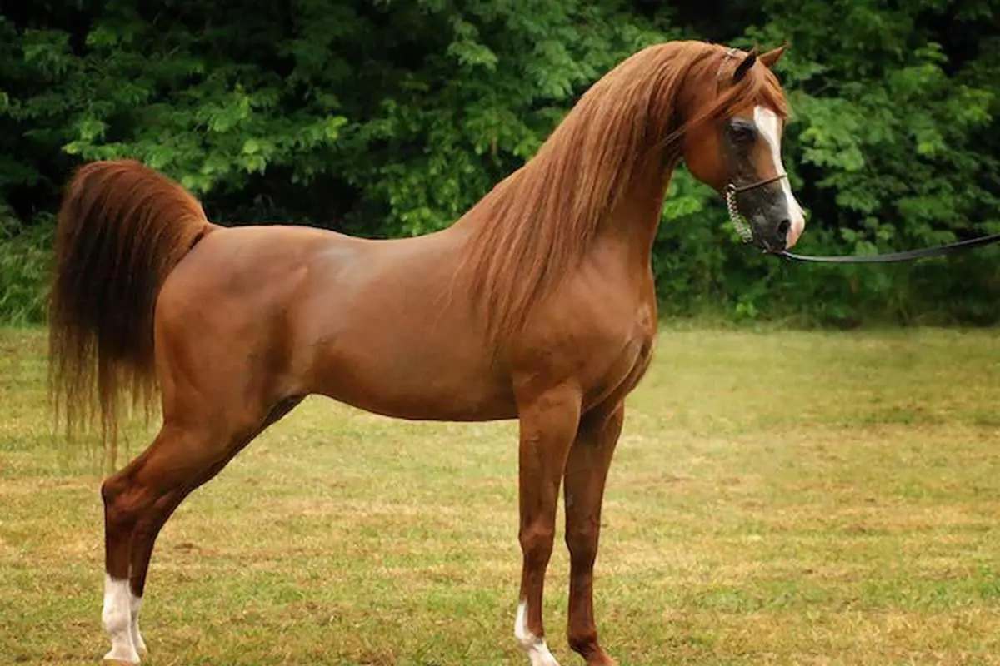

ÁRABE
Os cavalos árabe e uma raça originada na Península Arábica. Com um peculiar formato do crânio e da cauda, Esta raça é uma das mais facilmente identificáveis do mundo.
Esta também é uma das mais antigas raças equinas

| Características | |
| Cabeça | Cabeça distintiva com perfil côncavo, proeminente e bem refinada |
| Olhos | Grandes, expressivos e de formato arredondado, com um olhar inteligente e atento |
| Pescoço | Longo, elegante e arqueado, com uma boa inserção no tronco |
| Tronco | Compacto e bem equilibrado, com peito largo e profundo |
| Tamanho | aproximadamente 1,43 a 1,55 metros na cernelha. |
| Pelagem | Pelagem geralmente fina e sedosa |
| Temperamento | Dócil e Leal |